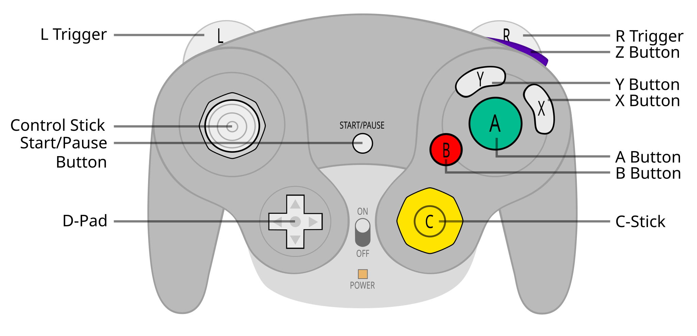

HAL · working draft
Anatomy of a Melee policy
A year ago, I trained a Melee behavior cloning policy on expert human demonstrations.
My intention was to train a good-enough checkpoint to warm start self-play RL, but a number of lingering questions compelled me to revisit whether it was possible to train an even more capable model.
The model I ended up training
Closed-loop play did not improve monotonically with training.
- Better encodings I made simplifying assumptions in the previous baseline that reduced the action space (i.e. discretizing analog controls, reducing concurrent button presses to the latest button), which could cause error accumulation in closed-loop. Can we do better? Should we directly regress on continuous values? How should we represent past actions to the model?
-
Prediction horizon
Previous baseline made single-frame predictions—what if we predicted multiple frames with receding horizon control, i.e. action chunking?
- The SOTA in robotics is to use flow matching policies to do so for continuous trajectories. I was curious whether that’d work for Melee.
- There’s evidence that action chunking helps not just because of temporal consistency or horizon reduction, but due to greater non-Markovian expressivity from effectively ensembling policies with random delays.
-
Compute-latency tradeoff
Relatedly, could longer prediction horizons allow for larger (aka smarter) models to run in real-time?
- There’s a frontier of performance defined by the maximum model sizes that can run at a given latency on fixed hardware. Larger models might be smarter, but they’d have to contend with more control + observation delay. I reasoned the curve would have to be an inverted-U, but it wasn’t obvious to me a priori where the optimum would be.
- Because of fixed sequential overhead from emulator steps and tensor preprocessing, I’d expect moving from 1 frame (16ms at 60fps) → 2 frames (32ms) would yield a disproportionate return on model performance, with diminishing returns after that.
- Offline RL Can we make better use of the signals we have from the offline dataset? Plain behavior cloning objective is misaligned with the actual task that we care about: winning matches. Trivial hindsight relabeling should allow us to better assign responsibility for damage and stocks to certain controller actions.
What I’m releasing
- Weights + datasetsPublic R2 + HF links links to add
- Online play serverlink to add
- Advantage estimatesAs a human training aid link to add
Experiments § 1
Encoding and representation learning
Next-frame prediction → independent multi-token prediction → DSv3-style multi-token prediction.
The clean comparison is O37. It separates two questions: should later predicted frames depend on earlier predicted frames, and should later controller parts depend on earlier parts from the same frame?
Two kinds of autoregression
Same parameters, data, updates, initialization procedure, and deployment.
off
on
off
on
Controller codec
The old codec simplified simultaneous buttons and analog controls. The current codec keeps the controller closer to the replay and learns both a class embedding and a projection of the physical value.
Old simplifying codec vs. current codec
The bridge changes the full codec package, so it does not isolate one class count.

Ideas that didn’t work as well
Representation branches
Select a branch for the result and the confound that matters.
Optimization
Muon, but not on long runs. AWR.
Advantage-weighted behavior cloning
Observed actions receive more weight when their return exceeds the detached value estimate.
w = min(3.5, exp(βA))
A = G(t+1) − V(st). The actor loss does not backpropagate through the value estimate.
In the modern near-control, AWR changed stock score by +0.076 and damage by +10.80. Helpful, but smaller than action-sequence modeling.
Optimizer split
What Muon touched, and what the evidence does not establish.
The old optimizer comparison changed optimizer and learning rates together: +0.030 stocks/min but −30.11 damage/min. O50 used Muon, but its long-run instability does not identify Muon as the cause. Button-logit absolute p99.9 rose from about 19.3 to 121.5.
Ideas that didn’t work as well
Objective and decoder branches
Mean change from the closest useful control.
Data & infra
One window per replay, sufficient shuffle block size.
Low-dimensional data with training sample trajectories considerably shorter than full episodes caused a disk-read bottleneck rather than a CPU or memory bottleneck when training on a large GPU.
The workaround was to read more windows per episode into an in-memory buffer, then shuffle and sample uniformly from waves of slots, with a minimum number of batches before re-sampling the same window.
Replay diversity inside a batch
The only recorded treatment was windows per replay.
Optimal model size vs. latency § 2
The data here is noisy.
Execution horizon
One checkpoint per line; execution length and replan interval move together.
Across-frame AR is much less sensitive at H4 and H6. The independent model falls from +0.096 at H1 to −0.905 at H6; D3 goes from +0.053 to −0.021.
Capacity against imposed delay
O39 checkpoints at D = 2³⁰ supervised positions.
The closest complete deployment frontier
Fixed data, RTX 3060-feasible models only; selected by mean damage at each delay.
I do not have the true fixed-compute closed-loop Pareto curve. O48 was designed but not run. Figure 13 fixes processed data, not training FLOPs.
Scaling experiments § 3
Validation NLL has a broad relationship with closed-loop play in O39. It is not reliable enough to select a checkpoint or capacity.
Validation NLL vs. closed-loop play
All healthy O39 model-budget points evaluated at delay 4.
Rank correlation by delay
At delay 4, n = 33 and Spearman ρ = −0.67. Lower NLL broadly goes with better play. The within-model paths still reverse often.
Interactive iso-FLOP fit
L(N,D) = 1.6350 + 89.11/N.368 + 2009/D.498
Show the 33 O39 points used in Fig. 14
| Model | Data | Validation NLL | Stocks/min | Damage/min | Run |
|---|
Current recipe § 4
The final model combines the pieces that survived the small-scale tests. Select a module, or select an experiment from the ledger beneath it.
O50 architecture and training recipe
Selected experiments dim unrelated modules.
Experiment ledger
Sort by the effect you care about; select a row to connect it to the final recipe.
| Experiment | Change | Stock Δ | Evidence |
|---|
Production training did not improve monotonically
Final validation NLL fell from 1.579 to 1.379.
- parameters216,496,794
- updates131,072
- positions8 × 2³⁰
- training loss1.358 bits
- throughput1,377 samples/s
- MFU25.2%
- evaluation96 boots
- aggregate crashes0
Historical reference
The old model reached +1.227 net stocks/min after 16.78M supervised examples. The old and new evaluation systems are not identical, so the gap to O50’s +0.345 is descriptive, not a controlled comparison. W&B wa7x0psv.
Sources. Audited experiment ledger, run CSV, O39 results, and the W&B runs linked inline. All stock and damage values are per active minute. LCB means the saved one-sided 95% lower bound unless a figure says otherwise.